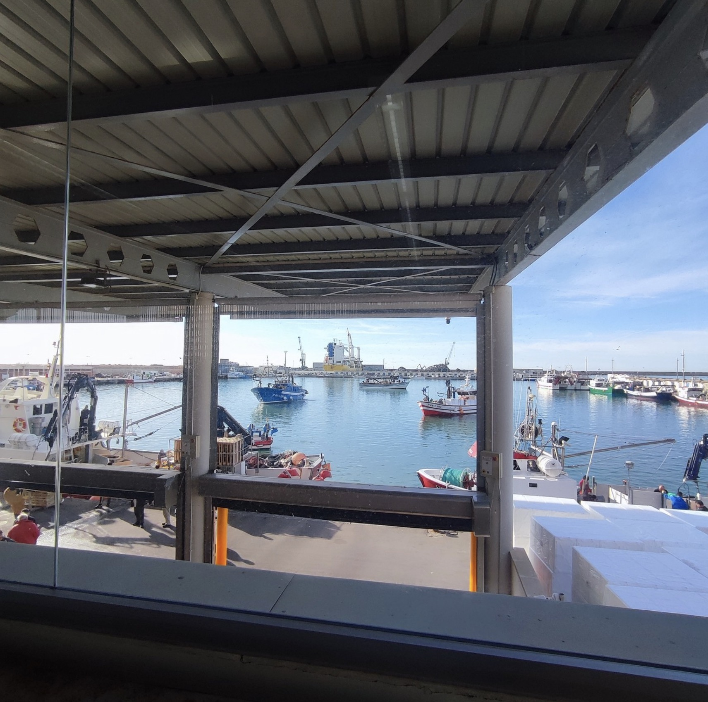
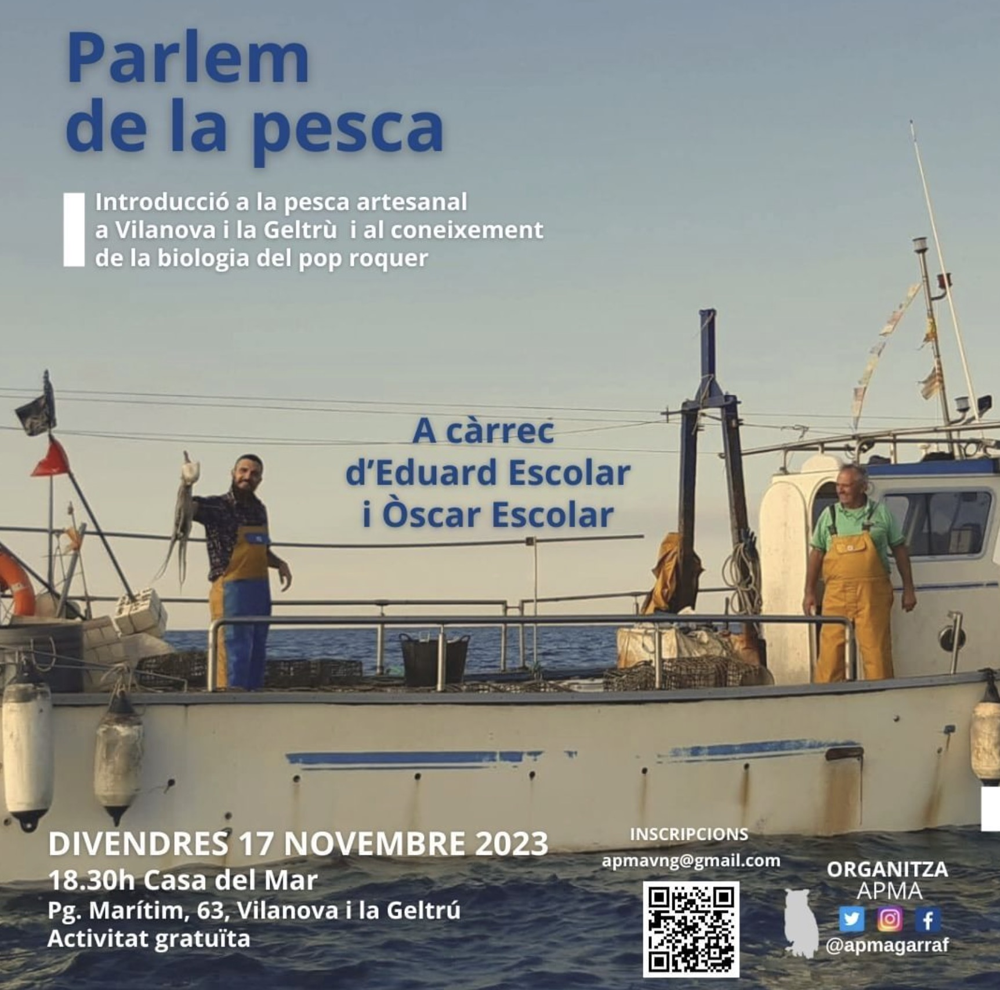

11 · Pesca artesanal
Cofraria de Pescadors de Vilanova i la Geltrú
Sin contactarAcceso interno: Sí
La Cofradía reúne a la comunidad pesquera de uno de los puertos más activos de Cataluña y organiza la actividad de la lonja. Permite seguir el vínculo entre pesca artesanal, subasta, mercado y ciudad.


Línea documental
Me interesa acompañar el regreso de los barcos, la descarga, la subasta y la preparación del producto. También conocer a pescadores de artes menores y observar cómo conviven tradición, regulación, sostenibilidad y relevo generacional.
Contacto
Dàrsena Pesquera s/n, 08800 Vilanova i la Geltrú · 938 150 250 · cpvilanova@llotjavilanova.com · info@llotjavilanova.com